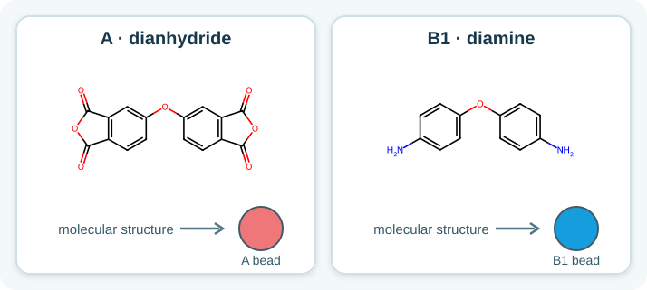
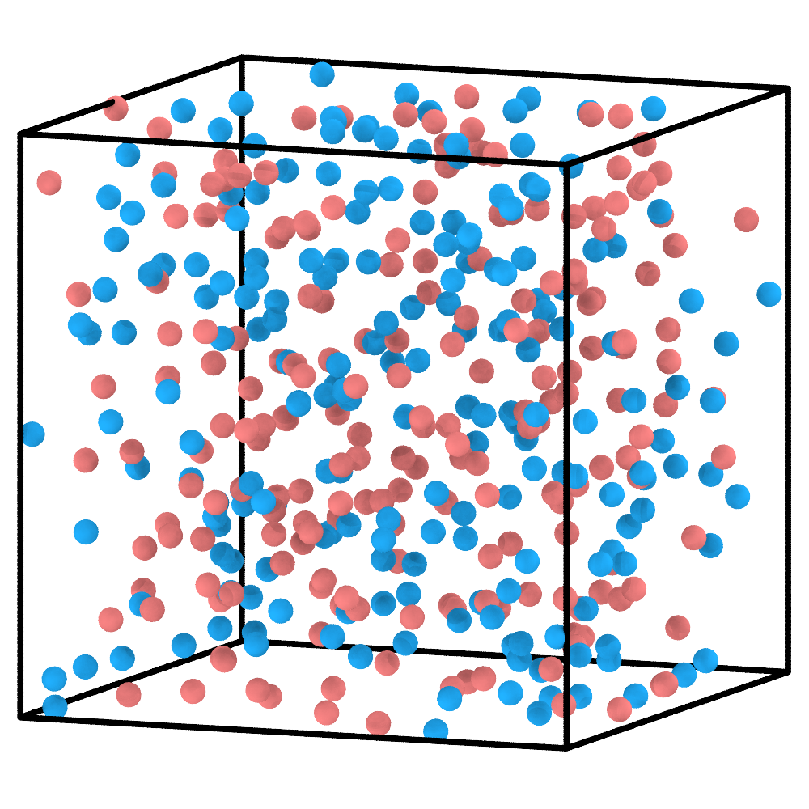
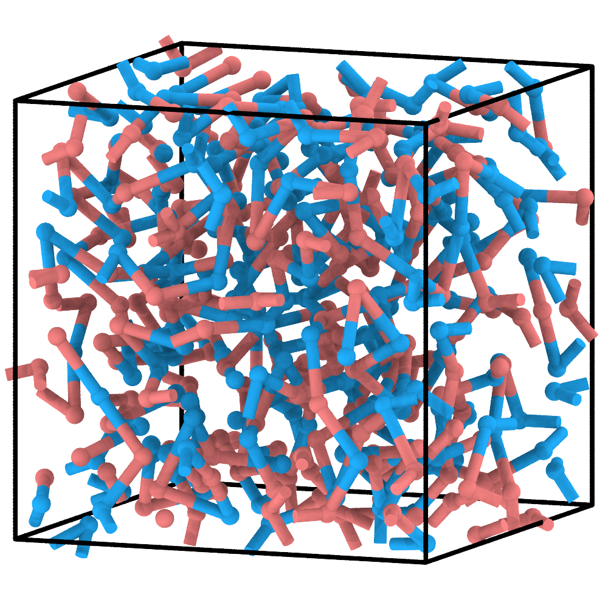
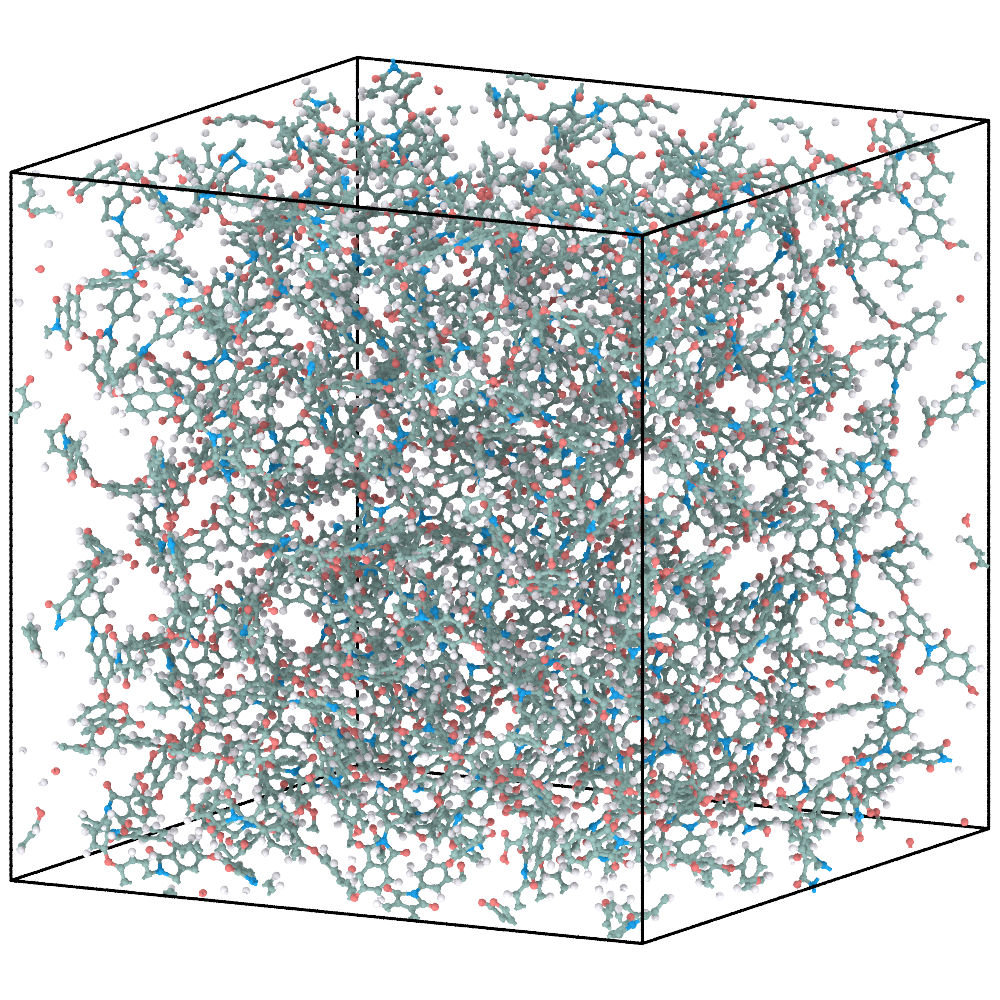
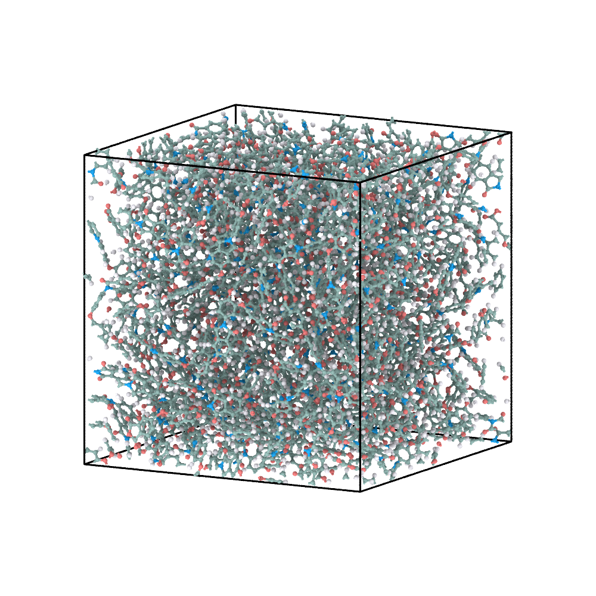

1. Linear polyimide: write the first Reaction-DSL¶
This example follows the complete ChemFAST path: define the chemistry, construct and relax a CG system, reconstruct the atomistic model, and briefly equilibrate the AA coordinates.
1. Define the reactants¶
The system contains dianhydride A and diamine B1. Each molecular reactant is
represented by one CG bead; the bead colours below are used throughout the CG
snapshots.
{kind=link}

Molecular definitions and their one-bead CG representations.¶
The complete input is:
{
"cg_topology_file": "reaction_final.xml",
"reaction_path_file": "reaction_path.txt",
"reactants": [
{
"name": "A",
"smiles": "O1C(=O)c2ccc(Oc3cc4C(=O)OC(=O)c4cc3)cc2C1=O",
"N": 200,
"max_valence": 2
},
{
"name": "B1",
"smiles": "Nc1ccc(Oc2ccc(N)cc2)cc1",
"N": 200,
"max_valence": 2
}
],
"reactions": [
{
"name": "A-B1",
"kind": "general",
"reactants": ["A", "B1"],
"smarts": "[O:1]=[C:2][O:3][C:4]=[O:5].[NH2:6]>>[O:1]=[C:2][N:6][C:4]=[O:5].[O:3]",
"prod_idx": [
0
],
"intrinsic_probability": 1.0
},
{
"name": "B1-A",
"kind": "general",
"reactants": ["B1", "A"],
"smarts": "[NH2:6].[O:1]=[C:2][O:3][C:4]=[O:5]>>[O:1]=[C:2][N:6][C:4]=[O:5].[O:3]",
"prod_idx": [
0
],
"intrinsic_probability": 1.0
}
],
"domd_react_dsl": "v1"
}
Both reactants have max_valence: 2, allowing two reaction-generated CG
connections per bead. The two ordered general rules, A-B1 and B1-A,
describe the same imidization chemistry for the two participant orders used by
the generated protocol. Their mapped SMARTS provides the atomistic edit that is
replayed after CG construction; prod_idx: [0] retains the imide-containing
product.
2. Choose a CG input route¶
Option A — reconstruct the supplied result (no PyGAMD required). The
tutorial archive includes a matched pair,
01_linear_pi/cg/reaction_final.xml and
01_linear_pi/cg/reaction_path.txt, supplied as a matched pair. From the
extracted tutorial root, run:
python reconstruct_aa.py 01_linear_pi
Continue at Step 4 after this command. This skips CG simulation, not force-field assignment: the full OPLS database must still be installed for the AA export. The supplied coordinates are an input for reconstruction, not a claim of final AA equilibration.
Option B — create your own CG model with PyGAMD. From the extracted tutorial root, prepare the inputs and run the reactive CG protocol:
python prepare_cg.py 01_linear_pi
cd 01_linear_pi/cg
python run_pygamd_polymerization.py initial.xml cg_parameters.json --gpu=0
cd ../..
Initial CG mixture |
Polymerized and pre-equilibrated CG configuration |
|---|---|
 |
 |
Option B generates its own CG results and replaces the supplied XML/ReactionPath
files; keep an untouched copy of the archive if you want to retain Option A.
The initial frame contains separate A and B1 beads. During the run, spatially
accepted reactions create CG connections and are written in order to
reaction_path.txt. The final configuration and ReactionPath must come from
the same run.
3. Reconstruct the atomistic model¶
If you completed Option A in Step 2, you have already run this command. Otherwise, from the extracted tutorial root, run:
python reconstruct_aa.py 01_linear_pi
Final CG configuration |
Energy-minimized AA reconstruction |
|---|---|
 |
ChemFAST replays the recorded reactions to build atomistic connectivity, then
uses the final CG coordinates to place the molecular fragments. Force-field
assignment and export produce atomistic.sdf, system.gro, system.top,
atomtypes.itp, and the molecule ITP files.
4. Briefly equilibrate the AA model¶
See AA relaxation for the external GROMACS steps used to
produce EM/EQ coordinates from the reconstructed system.gro.
Energy-minimized AA model |
AA model after the supplied short equilibration |
|---|---|
 |
The short AA run removes residual local strain and demonstrates that the exported model can continue in an atomistic MD engine. It is an initial equilibration, not a production protocol.
What to inspect¶
no A or B1 bead exceeds two reaction-generated connections;
the ReactionPath contains only
A-B1andB1-Aevents;the CG configuration and ReactionPath refer to the same node numbering;
the AA topology, coordinates, and included force-field files form one consistent export set.
Next: Radical PMMA.